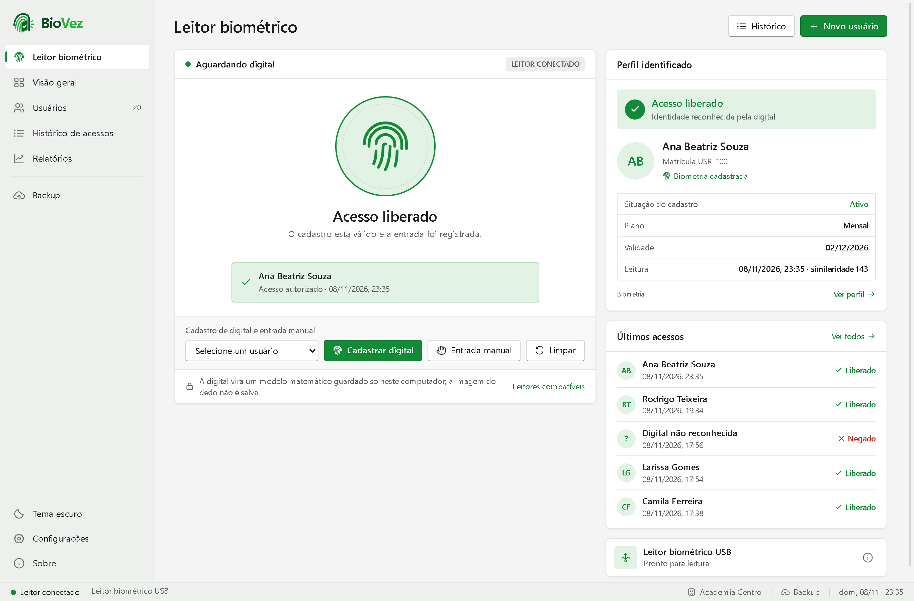

Identificação pela digital
A pessoa põe o dedo no leitor e o BioVez encontra o cadastro na hora, entre todas as digitais registradas.
O BioVez identifica a pessoa pela impressão digital, confere as regras de entrada e registra cada acesso. Tudo fica no seu computador.
Baixar o BioVez 1.2.0SHA-256: 968f9bd33692c5ee8e7aee4f2e63ba97f7dc9c693206170e544f08728e7de127

Feito para portarias, academias, escritórios e qualquer lugar que controla a entrada de pessoas cadastradas.
A pessoa põe o dedo no leitor e o BioVez encontra o cadastro na hora, entre todas as digitais registradas.
Bloqueia cadastro suspenso ou pendente, plano vencido, entrada fora do horário e leitura repetida.
Usuários com plano, validade e situação. Cada dedo é lido 3 vezes para um cadastro confiável.
Todas as entradas e tentativas, horários de pico, entradas por dia e exportação para Excel (CSV).
Cópias do banco de dados na pasta que você escolher, inclusive uma pasta do Google Drive ou do OneDrive.
Nada é enviado à internet. A digital vira um modelo matemático; a imagem do dedo não é guardada.
Baixe o instalador acima.
Abra o arquivo e confirme o aviso de administrador. Se aparecer "O Windows protegeu o computador", clique em Mais informações › Executar assim mesmo.
O instalador copia o programa, cria os atalhos e prepara o que o Windows precisa (WebView2 e Serviço de Biometria).
Conecte o leitor, abra o BioVez e cadastre os usuários.